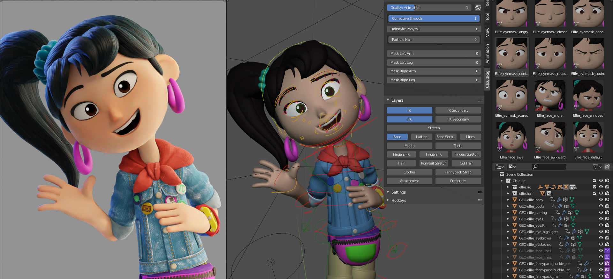
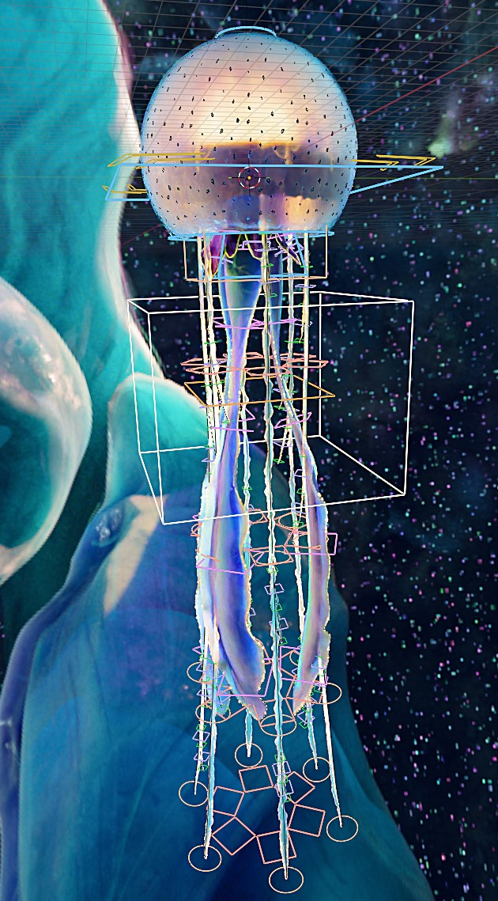

A Computação Gráfica é a área da Ciência da Computação responsável pela criação, manipulação, processamento e exibição de imagens e animações por meio do computador. Ela combina conhecimentos de matemática, programação e design para produzir imagens em 2D e 3D, além de simulações e efeitos visuais.

Jogos e Filmes: Criação de mundos virtuais, personagens e efeitos especiais realistas.
Arquitetura e Engenharia: Desenhos de prédios em 3D e maquetes antes de construir.
Medicina e Ciência: Imagens de exames do corpo humano e simulações do espaço.
Design e Publicidade: Criação de sites, logotipos, animações e peças de marketing.
Modelagem e 3D: Programas como Blender e Maya para moldar objetos virtuais.
Edição de Imagem: Ferramentas como Photoshop para mexer em fotos e cores.
Vídeo e Efeitos: Softwares como Premiere e After Effects para cortar e animar vídeos.
Arthur Fellipe da Luz Santana, Lázaro mendonça Mota da paz, Mayra Santos Marçasl, Rai Cleidson Conceição de Paula, Thaylla Santos Argôlo